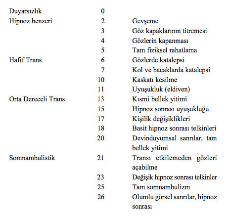

HİPNOZU AÇIKLAYAN TEORİLER
İdeomotor Aktivite ve Engelleme Teorisi
Bazı araştırmacılar telkine açıklığın etkilerinin ideomotor faaliyetlerin ve engellemenin sonucu olduğunu, ayrıca bunu yalnızca ideomotor faaliyetleri aracılığıyla gerçekleştirilen bir hayal etme deneyimi olduğunu düşünürler. Bu teori; hipnozda görülen bazı fiziksel ve psikolojik semptomları açıklayabilir ancak hipnoz sırasında ortaya çıkan karmaşık psikolojik tepkileri açıklamakta yetersiz kalır.
DAVİS VE HUSBAND YATKINLIK PUANLAMA SİSTEMİ

Ayrılma Teorisi
Yıllarca hasta hipnoz altındayken, davranışların belli bölümlerinin temel bilinçlilikten ayrıldığı, dolayısıyla da bireyin yalnızca bir refleks düzeyinden, irade dışı davranışla tepki verdiği kabul edildi. Ayrılma teorisi geçerli olsaydı, bellek yitimi hipnozu uygulayan kişinin verdiği telkinlerle giderilemezdi. Dahası bellek yitimi sürekli kendiliğinden oluşurdu.
Hipnozdaki hastaların bütün duyularının çok daha iyi olduğu ispatlandığında bu teoriden vazgeçildi. Bellek yitiminde ayrılma bir dereceye kadar oluşsa da bu hiçbir şekilde ayrılmanın hipnozu hazırladığı ya da hipnoza benzediği anlamına gelmez.
Gerileme Teorisi
Psikanalistler hipnozun temelde hipnoz uygulayan kişinin ebeveyn rolünü üstlendiği bir çocukluğa geri dönüş olduğu kanısına varmışlardır. Bu; terapist daha çok sevilen ebeveyn rolünü üstlenirse, hastayı daha kolay bir şekilde hipnotize edebilir demektir. Bu düşünce yansız bir düşüncenin gözlemi olamaz. Öyleyse bu teoriye göre baskın bir babanın çocuğu, otoriter bir yaklaşımla daha verimli çalışır ya da hoşgörülü bir teknik daha nazik ve açık ebeveynlerin çocuğu olan bir yetişkine daha çok uyar. Bu hem yanlıştır, hem de eksiksiz bir hipotez olabilmesi için erkeklerin kadınlara göre daha iyi hipnozcular olması gerekir. Deneylere dayanan istatistikler, klinik hekimler olarak cinsiyetler arasında çok az bir farklılık olduğunu göstermiştir.
Telkinlere Aşırı Açıklık Teorisi
Dikkat süresinin hipnozu uygulayan kişinin sözleriyle sınırlandırıldığı ve onun telkinlerinin etkili olduğu gerçeği yalnızca fenomeni açıklar, telkinlere aşırı açıklığın gerçekte nasıl oluştuğunu değil. Bellek yitiminin ve sanrılar gibi telkin edilmeyen bazı garip semptomların nasıl oluştuğunu açıklayamaz. Telkinlere aşırı açıklık teorisi, çıkarsama yoluyla yalnızca saf insanların telkine açık olduğunu da ima eder. Durum aslında böyle değildir. Hipnozun doğrudan ya da arttırılmış açıklık durumlarını içeren prestij telkinlere bağlı olduğu ve bu tür duygusal durumlarda telkinlerin etkilerinin hipnozda elde edilenlerle aynı olduğu ortaya konmuştur. Kanıt olarak sürü psikolojisindeki kışkırtmaların, hatiplerin ve pazarlamacıların ikna edici etkileri hipnozla karşılaştırılmıştır. Güçlü ikna kabiliyeti başarılı pazarlamacılığın önemli bir etkeni olmasına rağmen bir satıcı; somnambulizm, gerçek sanrılar ya da anestezi üretemez.
Hipnoz keskin sınırlarla tanımlanmış bir durum değildir; bilincin değiştirilen her durumu gibi, terapistin ya da kişinin kendisinin başlattığı algılama ya da uyarılmanın aşamalarına bağlı değişen bir süreçtir. Hipnoza girebilme kapasitesi uyku kadar öznel ve doğal bir fenomendir. Hipnoz, kortikal engelleme (düşünme süreçlerini yavaşlatma), telkinlere aşırı açıklık (hipnozcunun hipnoz durumuyla ilişkilendirilen prestij ya da statü yüzünden çok kolay etkilenme), atacılık gerilemesi (zihinsel işlevin daha ilkel bir şekline geri dönme), sahte ölüm (değiştirilmiş bir bilinç durumu yaşandığındaki en düşük öz-ayrımsama), ayrılma (kendini bulunan ortamdan koparma), bağımlılık ya da transfer (hipnozcuyu hayatından biri olarak görmek ve onu memnun etmeye çalışmak) gibi yalnızca tek bir etkenle açıklanamaz, çünkü diğer bütün davranışsal süreçler gibi, hipnoz da insan düşüncesinin birçok alanıyla çaprazlama döllenir.